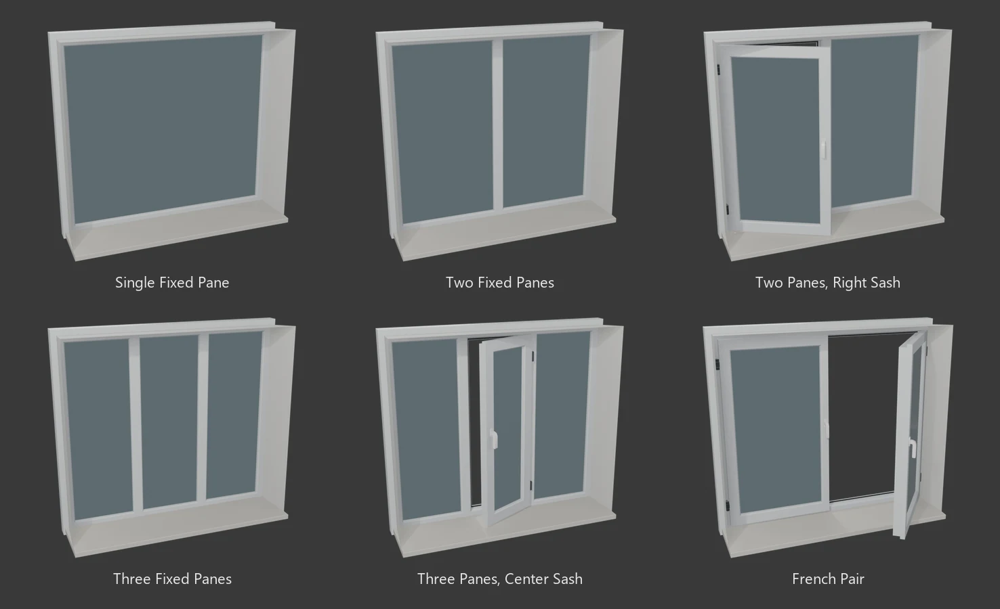
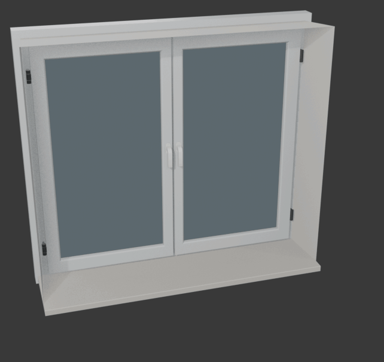
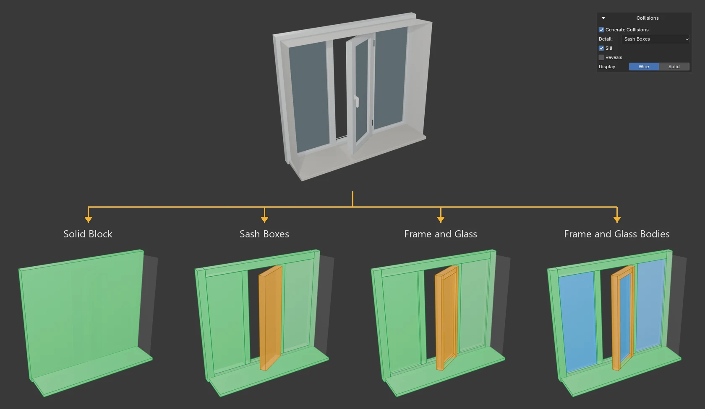

Windows¶
Creating windows¶
For a standalone window, set the opening in Opening and Walls and press Build at Cursor. For a window in a Room Builder plan, select a window opening in Openings or its Window Box object and press Build in Opening.
Choose a layout from the Window Presets menu, then adjust the number of sections, their hinges and their width ratios. Hinge sides are seen from outside.
To preview an open pose, set Preview Opening. After the opening changes, press Sync to Opening.

Parameters¶
Sections. Sections sets one to three sections, each with a hinge type (Fixed Glass, Left Hinge or Right Hinge) and a width ratio. French Pair Without Fixed Post turns two sashes into a pair without a mullion.
Sashes and Hardware. Handle Style chooses the handle of opening sashes: Match Window Profile takes the Modern Lever for uPVC and the Curved Round Pull for timber; either can be chosen directly, as can the Flat Strap Pull or None. The mounting plates are solid and the handle belongs to the sash’s moving hardware mesh. Handle Height places the handle from the bottom of the sash, 0.5 being the middle; near the ends the generator keeps the whole handle on the stile. Interactive Sashes in Godot makes opening sashes separate bodies in Godot. Opening Angle sets how far sashes open.
Frame and Glazing. Joinery Profile is uPVC, with a chamfered approach to the stop, or Traditional Timber, with a square outer rebate, an inner sash quarter and a timber material; both are simplified inward-opening windows. uPVC sections by GLOBHAUS · Timber window drawings by JM Joinery Frame Width (Top and Sides), Bottom Frame Width (0 uses the frame width) and Frame Depth size the frame; Frame Overlap Into Wall lets it reach into the wall; Frame Bevel chamfers the exposed aperture edges, 6 mm by default. The stepped joint has an outer stop on the frame and an inner lap on the sash, with a gasket on the stop’s shelf; Frame Stop Width, Sash Overlap and Minimum Sash Clearance set it, and the generator widens the clearance when the sash corner’s path needs it. Mullion Width and Sash Profile Width size the members, and Glazing Thickness and Glass Offset place the glazing.
Reveals and Sill. Reveal Angle slopes the three inner reveals toward the frame. Sill Projection Into Room, Sill Thickness and Sill Bevel shape the inner sill.
Part |
Rule |
|---|---|
Frame ( |
Outer frame, fixed mullions and outer stops form one connected mesh. Its outer edge may touch the wall or reach into it. |
Reveals ( |
Left, right and top reveals form one mesh with shared vertices at the top corners. They meet the opening edges exactly on the inner wall face and angle toward the frame. There is no bottom reveal. |
Sill ( |
Its bottom lies exactly on the opening’s bottom plane, |
Sash ( |
Two hinges share one axis; the sash origin is at the centre of the lower hinge pin. Pins and fixed hinge plates belong to |

In a French pair the left sash opens first and the right one, with the meeting stile, second; they close in reverse. The generator checks that the chosen angle lets the meeting stile pass the open left sash, and Preview Opening shows the sequence. Meeting stile in Liniar French windows The handles and hinges are smooth on rounded surfaces and sharp at hard joints.
Axes and origin¶
Window is the asset root. Its origin is where the outer and inner walls meet, at the middle of the opening width and on its bottom plane; in Room Builder that is the wall contour at the level height plus the opening’s bottom offset. +Z points up, +Y into the room perpendicular to the wall and X along the opening width, in metres. In Godot, +Y is up and the room side is −Z.
If d_ext and d_int are the distances from the joint to the outer and inner wall faces, those faces lie at Y = −d_ext and Y = +d_int. The middle plane of the fixed frame and glazing lies at Y = (d_int − d_ext) / 2 + offset, where Glass Offset is 0 by default and positive toward the room. Each sash with its glazing sits further into the room, behind the frame’s outer stop. Fitting to an opening takes the width, height, bottom level, inward direction and both wall depths from it; a standalone window takes its position from the cursor.
UV and texturing¶
The profiles are unwrapped strictly along the generator’s seams:
Each diagonal joint of a sash has a seam through the whole cross-section, across faces, bevels and the inner and outer profile.
The top and bottom frame rails unwrap as whole pieces; their ends and the outer faces of the stiles are separate islands, and cross seams separate stiles from rails through the whole section.
The inner surface of a fixed opening is split by a closed seam in the glass mid-plane; in an opening section the seam uses the loop where the stop meets the inner surface.
Two closed seams along the sash’s outer outlines and cross seams in every corner separate its four outer islands.
Each gasket ring in
FrameSealshas seams through the section at all four corners and along its outer edge on the stop side, so each side unwraps as one narrow strip.
Handles, hinges and the sill get their islands by projection. One Material is on by default for windows: all painted parts share one atlas and one texture set. The GLB has three materials: slopes (reveals, tiled UVs), glass (all glazing, tiled UVs) and frame (frame, sash profiles, gaskets, hardware and inner sill, on the shared atlas). In Blender each part keeps its own material for the Material ID bake.
Collisions¶
Collision Detail sets how closely the collisions follow the window. All shapes are boxes, except the reveals.

Detail |
Frame |
Sashes |
Glass |
|---|---|---|---|
Solid Block |
One |
No shapes of their own. Sashes stay closed in Godot, even with Interactive Sashes in Godot: their meshes export closed under the root |
Inside the block |
Sash Boxes (default) |
Boxes for the stiles, top and bottom rails, mullions and stop shelves; a window without sashes gets one |
One |
Fixed glazing is covered by a box at full frame depth |
Frame and Glass |
As Sash Boxes, also for fixed windows; boxes follow the frame members without bevels |
Four boxes along the sash profile: |
A thin |
Frame and Glass Bodies |
As Frame and Glass |
As Frame and Glass |
As Frame and Glass, with each pane’s box under its own |
The frame depth sets the depth of the main boxes; sash boxes sit further into the room with their profile, and outer stop boxes cover only their shelf, leaving the sash room to open inward. An opening sash has a simple shape of its own in its hinge’s space; static boxes leave its opening free, so it can turn through its full range without catching on the frame, reveals or sill. Sill (on by default) adds a box for the inner sill; Reveals (off by default) adds convex shapes for the three reveals, from the same eight points as their meshes, that leave the opening free.
A GlassNNBody sits at the centre of its pane. In Blender, the pane body of a sash is a child of the sash pivot and turns with it. In the manifest, the pane of an interactive sash is nested in the sash body; panes of fixed sections and of sashes that stay closed belong to the root. Each pane body has grag_body_kind glass, for its own collision layer, physics material or breaking logic. Without Generate Collisions the manifest still has the interactive sash bodies and their motion, but no shapes.
Export for Godot¶
With Merge, the fixed parts join into WindowMesh under the root and each interactive sash into SashNNMesh under its pivot; without it the GLB keeps the separate parts. Separate Handles in Merge and Export exports each handle as its own mesh SashNNHandle directly under its sash node, turning around its local Z, with the rose staying on the sash. When the sash does not open in Godot, the handle is a child of the sash’s visual mesh. Imported in Godot, for one interactive sash with a sill collision:
Window Node3D, or StaticBody3D with Root Type
├── WindowMesh MeshInstance3D (frame, reveals, sill)
├── StaticCollision StaticBody3D for the fixed shapes
│ ├── FrameLeftCollision CollisionShape3D
│ ├── FrameRightCollision
│ ├── FrameTopCollision
│ ├── FrameBottomCollision
│ ├── FrameStop01…Collision (the four stop shelves)
│ └── WindowsillCollision
└── Sash01 AnimatableBody3D on the hinge axis
├── Sash01Mesh MeshInstance3D
└── Sash01Collision CollisionShape3D
Sash ids follow their sections, such as Sash01 and Sash02. Each sash’s grag_motion has the local axis, closed_degrees 0 and open_degrees, signed by direction; on the right sash of a French pair, requires_open names the sash that must open first. Without Interactive Sashes in Godot, the sash meshes and their shapes are exported closed under the root.
Export for Substance Painter¶
Glass is left out of both files. Each sash is a bake group moved apart along X, at least 0.5 m from the wall and from other sashes. The reveals and an exterior wall, ExteriorWall_high, are only in the high file, for ambient occlusion: the wall’s outer plane lies at Exterior Wall Depth and its opening faces run from it to the frame’s outer plane. Exterior Sill Thickness raises the bottom of that exterior opening by the thickness of an outside sill (0 m by default); export again after changing it. With One Material the low file has one texture set, Window_Paint.
Use in a game scene¶
Place
Windowat the middle of the opening’s bottom edge on the wall joint plane, facing the room, and check the fit in vertical and horizontal sections. For another opening size, generate a matching window in Blender.Check the imported tree and shapes. A closed sash’s shape covers its opening; open, the opening must be free of static shapes. Check the motion from closed to fully open with the collisions this instance uses.
Drive each sash body found by
grag_body_id. For force-driven opening, replace it with aRigidBody3Dand pin it to the fixed root with aHingeJoint3D, using its pivot, axis and the limits fromgrag_motion. HingeJoint3D